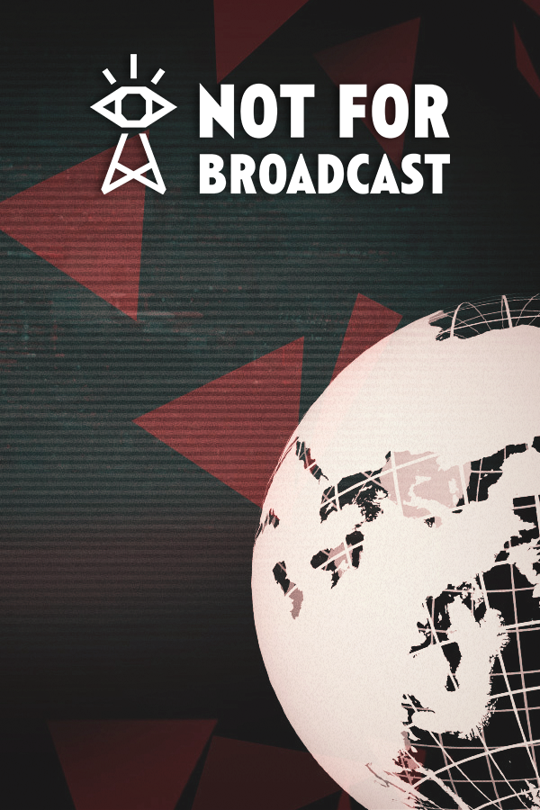

Not For Broadcast
Not For Broadcast
Details
|  | |
| Playtime | Not Played |
| Last Activity | Never |
| Added | 5/06/2025 3:25:10 |
| Modified | 6/06/2025 22:26:33 |
| Completion Status | Not Played |
| Library | Steam |
| Source | Steam |
| Platform | PC (Windows) |
| Release Date | |
| Community Score | |
| Critic Score | |
| User Score | |
| Genre | Adventure Indie Simulation |
| Developer | |
| Publisher | |
| Feature | Achievements Captions Available Cloud Saves Family Sharing Full Controller Support Single-Player Trading Cards |
| Links | Community Hub Discussions Guides News Store Page PCGamingWiki Achievements |
| Tag | 1980s Adventure Alternate History Atmospheric Choices Matter Choose Your Own Adventure Dark Comedy Dystopian First-Person FMV Indie Interactive Fiction Management Multiple Endings Point & Click Political Political Sim Simulation Singleplayer Story Rich |
Description

Feature List:
- Deep and meaningful gameplay decisions
- 14 distinct endings
- Darkly-comic branching narrative
- Over 42 hours of full motion video (FMV) - a GUINNESS WORLD RECORDS™ achievement
- Bursting with musical numbers
Take control of the National Nightly News. With the nation's eyes fixed on your choices, it’s up to you to decide what gets broadcast. Choose the shots, censor any “troublesome” content, and steer the narrative as your country tumbles into totalitarianism. No pressure, right?

Hand-pick the Headlines
Not For Broadcast drops you into the heart of a darkly-comedic tale of televised chaos, where your every decision helps shape the fate of a nation. From ego-fueled celebrities to deceptive politicians and enigmatic advertisers - you control the public’s perception. As long as you can hold the audience’s fickle attention, it’ll be your choice whether to toe the party line or hype up the scandal.
Will you make that sportsman seem like a national treasure, or an alcoholic disgrace? What about those scientists trapped in Dante’s Taint? Or that new boss at multinational giant Rymmington-Svist who seems to live a double life? Most importantly, will you help the brand-new government look benevolent, or is there something untoward about them that the public need to see?
The power is in your hands to change everything, but you’ll have to decide quickly - the news goes out live!

Craft the Narrative (and the Nation's Fate)
You are in the driving seat of a multi-level tale about both an entire country and a single family. Being the architect of the nation’s future is a challenge, to be sure, but so is trying to hold your household together through the dark times.

With multiple branching narratives, every choice you make resonates into the future. Will you help your spouse’s sibling flee the country... even if it involves breaking the law? Who are ‘Disrupt’ - concerned citizens or something more revolutionary? And how do you feel about your son spending more and more time with them?
And then there’s Grandma... Can you afford her life-saving treatment, or should you and your spouse be taking advantage of one of the Government’s brand-new Transition Centres? After all, granny, there’s nothing more noble than unburdening your children!

And then there’s your broadcast room - when it’s not overheating, it seems to be trying to electrocute you. Keep the plates spinning as best you can, but remember, whether it’s a newsreader who just won’t take it any more, naked streakers at the Sportsboard Final, or the ever growing threat of nuclear war... this show MUST go on.
Cue the Ads
Select your ads carefully to mould the public’s opinion. Why not choose to show only adverts for the companies you have shares in? Maybe that extra cash will help with the difficult decisions at home. Or maybe you’ll be selling dangerous toys to the nation’s children…
With more than 50 hilarious ads to choose from there’s never a dull moment - even during the breaks.

Endure the Unthinkable and Laugh in the Face of Adversity
There will be smiles, there will be tears, even as the world falls apart around your ears. So grit your teeth, close your eyes and keep those cameras rolling - the people are counting on you. Long live the National Nightly News.